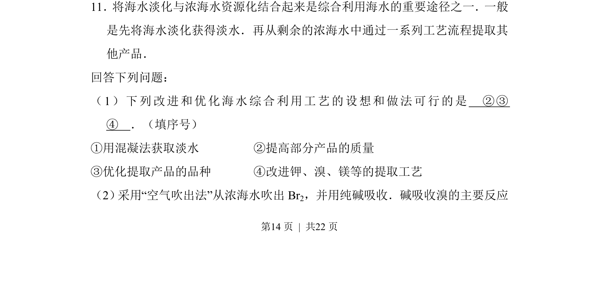
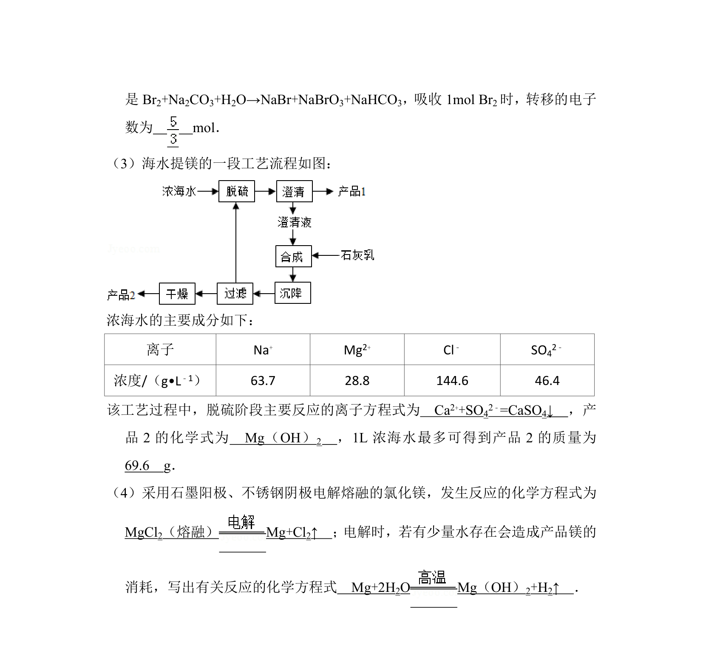
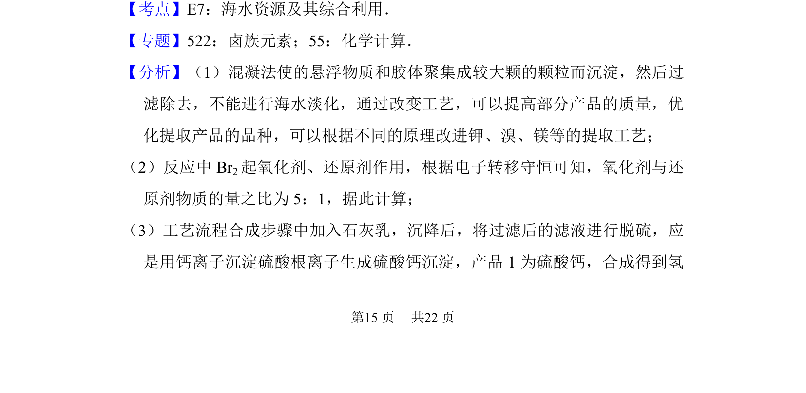
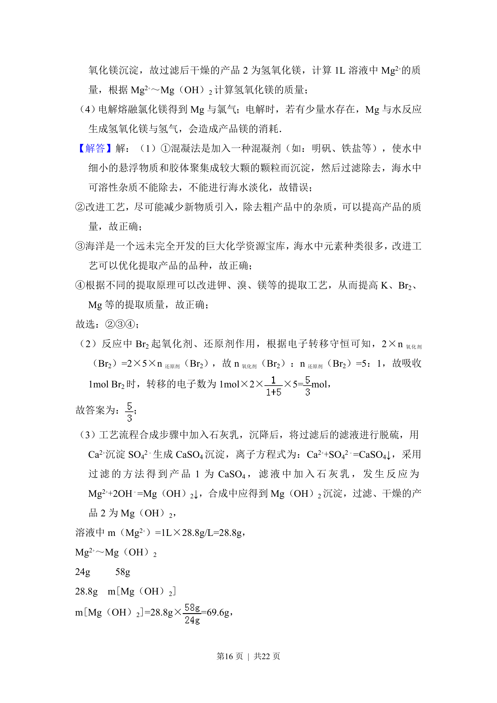
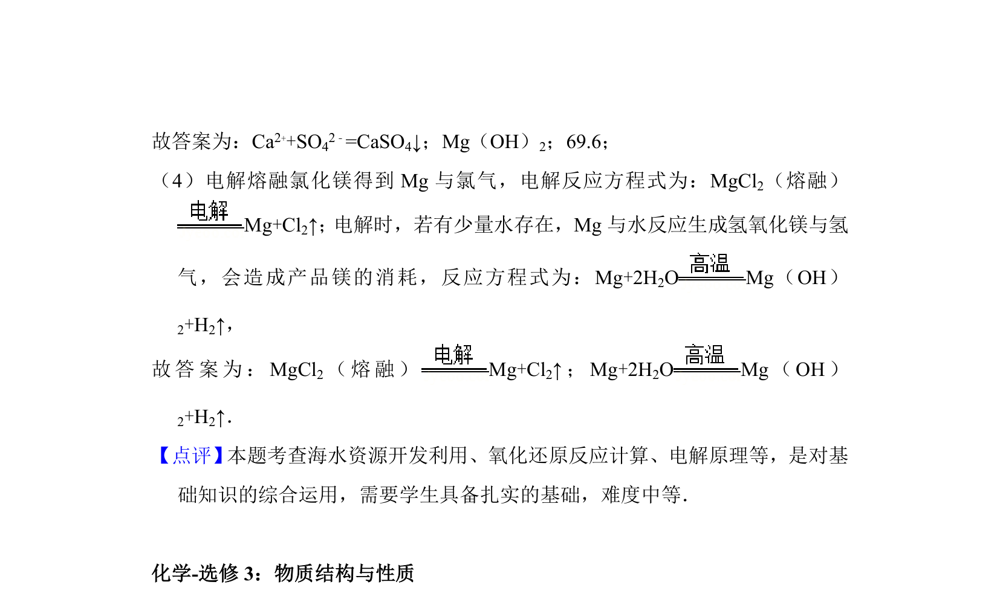

考点：海水淡化 海水提溴 资源综合利用 工艺流程优化


该题考查海水淡化与浓海水资源化利用的工艺选择及空气吹出法提溴的原理。



📄 原 PDF 第 14 页：
素材/真题/吉林/2008-2024·（吉林）化学高考真题/2014年高考化学试卷（新课标Ⅱ）（解析卷）.pdf
11．将海水淡化与浓海水资源化结合起来是综合利用海水的重要途径之一．一般 是先将海水淡化获得淡水．再从剩余的浓海水中通过一系列工艺流程提取其 他产品． 回答下列问题： （1）下列改进和优化海水综合利用工艺的设想和做法可行的是 ②③ ④ ．（填序号） ①用混凝法获取淡水 ②提高部分产品的质量 ③优化提取产品的品种 ④改进钾、溴、镁等的提取工艺 （2） 采用“空气吹出法”从浓海水吹出Br2，并用纯碱吸收．碱吸收溴的主要反应